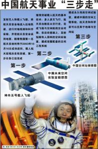
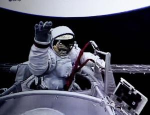
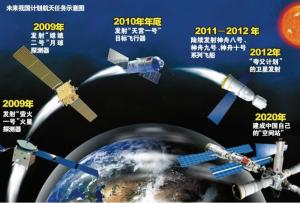
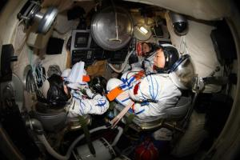

The history of China's manned space research can be traced back to the early 1970s. After China's first man-made earth satellite Dongfanghong-1 was launched, Qian Xuesen, then head of the Fifth Academy of the Ministry of Defense, proposed that China should carry out manned space flight. At that time, the country named the project "Project 714" (which was put forward in April 1971) and the spacecraft "Dawn 1". However, after a period of work, China believes that there are certain difficulties in developing manned space flight, not only in terms of research team and experience, but also in terms of comprehensive national strength and industrial foundation. This project has been put aside.
2In the early 1970s, after China's first man-made earth satellite Dongfanghong 1 was launched into space, it began the development of several communication satellites such as Dongfanghong 2, Dongfanghong 2a and Dongfanghong 3.
since the 1980s, China's space technology has made great progress and has developed and launched various application satellites such as return satellites, meteorological satellites, resource satellites and communication satellites. Especially in 1975, China successfully launched and recovered its first recoverable satellite, making China the third country in the world to master satellite recovery technology after the United States and the former Soviet Union. This laid a solid foundation for China to carry out research on manned space technology.
in January p>1992, the Chinese government approved the launch of the manned space program and named it project 921. In the seven systems of Project 921, manned spacecraft is the core, and manned spacecraft is mainly developed by China Institute of Space Technology. When Project 921 was officially launched, the central government put forward the goal of "fighting for 8 guarantees and 9 guarantees", i.e. to make a major technological breakthrough in 1998 and to strive for the spacecraft to reach the sky in 1999. China's Tangjialing Space City has ensured the material conditions for China's manned space project to complete its manned space mission.
on November 20, 1999, China's first unmanned test spacecraft, shenzhou-1, took off in Jiuquan and successfully landed at the recovery site in central inner Mongolia 21 hours later, completing its maiden voyage. The success of this flight has laid a very solid foundation for China's manned spacecraft to go into space. On January 10, 2001, China successfully launched the Shenzhou II spacecraft at Jiuquan Satellite Launch Center. On March 25, 2002, China successfully launched the Shenzhou III spacecraft at Jiuquan Satellite Launch Center. On December 30, 2002, China successfully launched Shenzhou IV unmanned spacecraft at Jiuquan Satellite Launch Center.
at 0900 hours on October 15, 2003, China's self-developed "shenzhou" 5 manned spacecraft was launched from China's Jiuquan satellite launch center. At 9: 09: 50, Shenzhou V entered the scheduled orbit accurately. This is China's first manned space flight. The 38-year-old Yang Liwei was the astronaut on the Shenzhou-5 manned spacecraft. He is the first generation of astronauts trained by our country. After flying around the earth 14 times in space, and after 21 hours, 23 minutes and 600,000 kilometers of safe flight, he successfully landed at the main landing site in inner Mongolia at 6: 23 on the 16th and returned.
(From October 12 to 17, 2005, China successfully carried out its second manned space flight, and it was also the first time that China's two astronauts, Fei Junlong and Nie Haisheng, were put into space at the same time. At 9: 00 on October 12, the Long March 2 F carrier rocket that launched Shenzhou VI ignited. The rocket blasted off four seconds after ignition, and its roar reverberated across the Gobi desert. This is the 88th launch of the Long March rocket. It is China's second spacecraft carrying astronauts and China's first manned spacecraft to carry out a "multi-person, multi-day" mission.
On September 25, 2008, China's third manned spacecraft Shenzhou VII was successfully launched. Three astronauts Zhai Zhigang, Liu Boming and Jing Haipeng were successfully launched. On the 27th, Zhai Zhigang, dressed in the "Feitian" extravehicular spacesuit developed by our country, and assisted by Liu Boming, dressed in the Russian "Seahawk" extravehicular spacesuit, carried out an extravehicular activity of 19 minutes and 35 seconds. China subsequently became the third country in the world to master the technology of space exit activities.
On the evening of September 28, 2008, Shenzhou VII spacecraft successfully landed on the Gulang grassland in central Inner Mongolia's A Mu after successfully completing its space exit activities and a series of space science experiments. Shenzhou VII spacecraft flew for 2 days, 20 hours and 27 minutes. Starting from Shenzhou VII, China has entered the second phase of manned space flight. In this phase, scientific goals such as astronaut extravehicular walking and space rendezvous and docking will be realized one after another. All the launching tasks for the whole second phase of the project will be undertaken by Chang Er F rocket. The follow-up mission will break through the key technologies of space rendezvous and docking, solve the space application problems with a certain scale and short-term care, and prepare for the implementation of the "third step" strategic mission. The main goal is to break through the rendezvous and docking technology of manned spacecraft and space vehicles, develop and launch an 8-ton space laboratory, and gradually master the space station technology.
Therefore, in order to realize the "three-step" development strategy, there are still many key technologies that need to be broken through, including breaking through the rendezvous and docking technology of manned spacecraft and space vehicles, developing and launching space laboratories, and solving the space application problems with a certain scale and short-term care. Construction of a space station to solve the problem of large-scale and long-term manned space applications.
shenzhou viii spacecraft is the eighth of China's shenzhou series spacecraft. After Shenzhou 8 was launched, it docked with Shenzhou 9 and became a small space station. Qi Faren, academician of the Chinese Academy of Engineering and former chief designer of the Shenzhou spacecraft, revealed that in China's "three-step" manned space program, China will eventually build a basic space station, which will not exceed the existing "Mir" or the International Space Station. Academician Qi Faren said that the basic space station roughly consists of a core module, a cargo ship, a manned spacecraft and two other modules for experiments, with a total weight of less than 100 tons. The core module needs to be manned for a long time and can interface with various experimental modules, manned spacecraft and cargo spacecraft. Only rockets with a carrying capacity of more than 20 tons are eligible to launch the core module. To this end, China has built a new fourth space launch site in Wenchang, Hainan, following Jiuquan, Taiyuan and Xichang, which is mainly responsible for launching spacecraft such as geosynchronous orbit satellites, high-mass polar orbit satellites, large-tonnage space stations and deep space exploration satellites. At the same time, China will also build a new assembly plant in Tianjin.
At 1837 hours on June 16, 2012, the Shenzhou 9 spacecraft took off from Jiuquan Satellite Launch Center by Long March 2 F Yao 9 rocket. This is the 165th launch of a Long March rocket and shenzhou spaceship's fourth manned flight. Chinese astronauts Jing Haipeng, Liu Wang and Liu Yang will stay in Tiangong for the first time. 33-year-old Liu Yang also became the first Chinese woman to fly into space. Shenzhou 9 spacecraft automatically docked with Tiangong 1. The two joined hands for a brief separation after 6 days of space flight, and then conducted rendezvous and docking manually controlled by astronauts.
tiangong-1 is actually the embryonic form of a space laboratory. its weight is the same as shenzhou-7. it is used to complete rendezvous and docking with spacecraft. The main body of Tiangong-1 is a short and thick cylinder with a diameter larger than that of shenzhou spaceship and a pair of connectors at the front and back. Two-cabin configuration is adopted, namely an experiment cabin and a resource cabin. The experiment cabin consists of a sealed front cone section, a column section and a rear cone section. A docking mechanism, rendezvous and docking measurement and communication equipment are installed at the front end of the experiment cabin to support rendezvous and docking with the spacecraft. The resource module provides power for orbital maneuver and energy for flight. At 0705 hours on June 25, 2013, the Shenzhou 10 spacecraft separated from the Tiangong 1 target spacecraft and circled over Tiangong 1, successfully completing the circling and close encounter missions and teaching in the air.